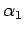

Inhalt Index DeskTop Bronstein

 Integraltransformationen Z-Transformation Anwendungen der Z-Transformation
Integraltransformationen Z-Transformation Anwendungen der Z-Transformation


Die Differenzengleichung 2. Ordnung lautet:
Als Anfangswerte sind y0 und y1 gegeben.
Mit Hilfe des zweiten Verschiebungssatzes erhält man zu (15.136) die Bildgleichung
| (15.137) |
Setzt man  , dann lautet die Bildfunktion
, dann lautet die Bildfunktion
Das Polynom p(z) habe die Nullstellen  und  , für die und gelte, weil sonst a0 = 0 wäre und sich die Differenzengleichung auf eine solche erster Ordnung reduzieren würde. Durch Partialbruchzerlegung und Anwendung der Tabelle Z-Transformationen ergibt sich aus
, für die und gelte, weil sonst a0 = 0 wäre und sich die Differenzengleichung auf eine solche erster Ordnung reduzieren würde. Durch Partialbruchzerlegung und Anwendung der Tabelle Z-Transformationen ergibt sich aus
| (15.139b) |
und nach dem ersten Verschiebungssatz
 |
(15.139c) |
Dabei ist p-1 = 0 zu setzen. Mit Hilfe des Faltungssatzes erhält man die Originalfolge mit
| (15.139d) |
Wegen p-1=p0 = 0 ergibt sich daraus mit (15.139a)
| (15.139e) |
Diese Form läßt sich noch wegen und (s. Wurzelsatz von VIETA) noch zu
vereinfachen. Für erhält man analog
| (15.139g) |
Bei der Differenzengleichung 2. Ordnung läßt sich die Rücktransformation der Bildfunktion Y(z) auch ohne Partialbruchzerlegung durchführen, wenn man Korrespondenzen wie z.B.
| (15.140a) |
benutzt und auch hier den zweiten Verschiebungssatz anwendet. Mit der Substitution
lautet die Originalfolge zu (15.138):
| (15.140b) |
Diese Formel ist günstig für eine numerische Auswertung besonders dann, wenn a0 und a1 komplexe Zahlen sind.
Hinweis: Die hyperbolischen Funktionen sind auch für komplexe Argumente definiert.